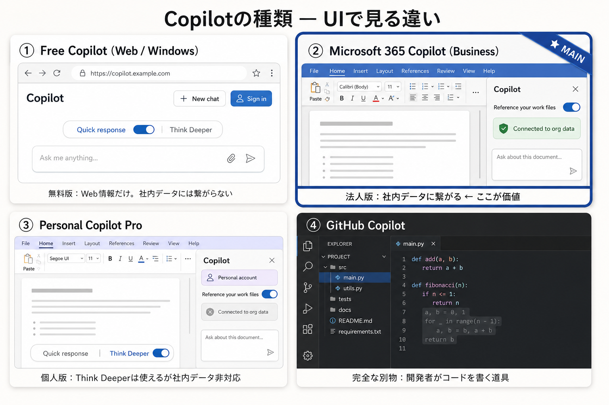

「Copilot？ 一度使ったけど、たいしたことなかったよ」——もしあなたが去年そう感じてそのままなら、その記憶はもう古くなっています。2025年の終わりから2026年にかけて、Copilotの中身は静かに、しかし決定的に入れ替わりました。
厄介なのは、見た目がほとんど変わっていないこと。だから多くの人が、中身が入れ替わったことに気づかないまま「前と同じだろう」と素通りしてしまう。これは、とてももったいない。この記事は、そのズレを埋めるための"地図"です。
01
Copilotとは何か？ひとことで言えば「Officeの中にいるAI」
Copilot（コパイロット）は、Microsoftが提供する生成AIです。生成AIとは、ChatGPTに代表される「文章で頼むと、文章で返してくれるAI」のこと。
ただ、Copilotには他と違うはっきりした"立ち位置"があります。WordやExcel、PowerPoint、Outlook、Teamsという、いつも使っているOfficeソフトの「中に」住んでいるのです。別のサイトに質問しに行くのではなく、作業している場所から離れずにAIを呼べる——ここがCopilotの一番の個性です。
Copilotという名前自体が「副操縦士」という意味。操縦桿（仕事の最終判断）を握るのはあなた。Copilotは隣で面倒な計算や下書きを引き受ける相棒。主役はあくまで人間という設計思想が、この名前に表れています。
新人が作った下書きを、そのまま社外に出す人はいませんよね。サッと目を通して、直して、使う。Copilotとの付き合い方も、まったく同じです。この感覚は、このあと何度も出てきます。
ここから先では、Copilotの「種類」「中身のモデル」「基本の使い方」「他の3大AIとの違い」「最低限の心構え」を一気に整理し、最後に「これだけは覚えておくべき6つのこと」にまとめます。明日から手を動かすための知識を、まるごとお渡しします。
※ Noteに掲載する際は、この位置に有料ライン（販売エリア）を設定してください。
02
どんな種類があるのか？ここでみんな混乱する。判断軸は「繋がるデータが違う」だけ
「Copilot」という名前は、実はいろいろな別物に使い回されています。ここの整理ができていないと、ネットの情報を読んでも噛み合いません。見分ける軸はたったひとつ——「繋がっているデータが違う」。これだけです。
とはいえ、表や言葉だけではイメージしにくいもの。同じ「Copilot」でも、画面（UI）を並べてみると“別物”だと一目でわかります。下の図で、代表的な4つの見た目の違いを掴んでください。

補足をひとつ。同じ「Copilot」でも、個人版と法人版では“できること”がはっきり違います。本記事で「会社版なら」と書いている部分は、個人版では再現できないことがある——と覚えておいてください。
📎 公式リファレンス（本物の画面はこちらで確認できます）
03
モデルはどうなっているのか？結論：「名前で覚えない」が正解です
「Copilotの中身ってGPT-5なんでしょ？」とよく聞かれます。半分正解で、半分は“覚えても無駄になる知識”です。理由を、事実の時系列で説明します。
お気づきでしょうか。数か月ごとに数字が増えています。そしてここが肝心——画面に表示されるモデル名は、ロールアウトの進み具合・会社のテナント・使っている端末（Web／デスクトップ／モバイル）によってバラバラです。隣の人と名前が違っていて当たり前。「GPT-5.4が見える人」も「5.5が見える人」も「数字なんて出ていない人」もいます。
つまり、固有名を一生懸命覚えても、すぐ古くなるか、自分の画面には無いかのどちらか。だから覚えるべきは、名前ではなく——
Microsoftが用意したモードは、本質的にこの2軸に集約できます。
| モード | ひとことで | 向いている作業 |
|---|---|---|
| クイック応答 | すぐ返す（速い） | メール文案、短い説明、簡単な要約、言い換え |
| Think Deeper | 時間をかけて深く考える | 戦略の検討、比較、長文の要約、議事録のような多段整理 |
| 自動 / Auto | 上の2つを自動で判断 | 迷ったらこれ。まずは既定のまま |
去年「Copilotは使えない」と感じた体験の正体は、たいてい「重い作業を“速い”モードのまま頼んでいた」こと。速いモードは速さ優先で、深い検討は苦手。複雑な仕事を投げると論点が浅くなり、途中で切れた要約しか返らない。それをThink Deeper（じっくり）に切り替えると、数分かけてでも段階的に考え、構造化して返す。同じCopilotとは思えないほど結果が変わります。
覚え方
回答が薄い・浅いと感じたら、それが「じっくり（Think Deeper）に切り替える合図」です。集団で覚えるなら、これ一つで十分。04
基本的な使い方は？「5つの動き」で、もう迷わない
機能名を100個覚えるより、正しい“動き方”を1セット身につけるほうが、ずっと役に立ちます。AIとのやり取りは、次の「5つの動き」で説明できます。Copilotでも他のAIでも共通です。
うまく使う人とそうでない人の差は、才能ではありません。③「戻す」を遠慮なくやれるか、ただそれだけです。一発で完璧な答えは返りません。新人に「ちょっと違う、こうして」と言うのと同じで、何度か往復して育てるもの。遠慮した瞬間に、AIの価値は半分以下になります。
そして、すべての土台が言語化。コツは「出し惜しみはしない。でも、盛らない」。たとえば「議事録まとめて」ではなく——
コピペで使えるプロンプトの型（議事録）
「以下は社内会議のメモです。①決定事項 ②宿題（担当者つき）③次回までの確認事項、の3つに分けて、箇条書きでまとめてください。【ここにメモを貼る】」「何を・どんな構造で」まで言葉にする。これだけで結果は別物になります。この“型”は一度自分用に保存しておくと、毎回ゼロから考えずに済みます。
05
他の3大AIとの違いは？「どれが最強か」は、問いの立て方が間違い
「ChatGPT、Gemini、Claude、Copilot……結局どれがいちばんすごいの？」——この問いでは正解にたどり着けません。万能な1台は存在しない。それぞれ「得意な4人のアシスタント」だと思ってください。
| AI | 開発元 | ざっくり言うと | 得意 |
|---|---|---|---|
| ChatGPT | OpenAI | 何でも屋・万能型 | 幅広い相談、画像・音声まで一台で |
| Gemini | 大量読解・調べ物 | 分厚いPDF/資料の一括読み、Google連携 | |
| Claude | Anthropic | 文章の質・長文の正確さ | 自然な日本語、議事録・文書整形、長文 |
| Copilot | Microsoft | Office実務の相棒 | Word/Excel/PowerPoint/メールの時短 |
大事なのは選び方の軸です。「性能ランキング」ではなく、「自社のITが、MicrosoftかGoogleか」で決まります。社内の中心がMicrosoft 365ならCopilot、Google WorkspaceならGemini。Copilotの価値は「AIの性能」よりも「Officeとの統合度」にあります。
そして現場にはもう一つの現実があります。多くの企業では、セキュリティやガバナンス（統制）の観点から「社内で使えるAIはCopilotだけ」というケースが非常に多い。これは「Copilotが一番賢いから」ではなく、「Microsoft環境にすでに統制が効いていて、情シスが管理しやすいから」。だから本シリーズは、Copilotを主役に据えています。
豆知識
Copilotの中身は今やマルチモデル構成になりつつあり、機能によってはAnthropicのClaudeも選べるようになってきています。ただしどのモデルが見えるかはテナント＝会社の設定しだいで、表示されない環境も多い。結論は同じ——「自分の画面に何があるか」を、まず自分で確認する。06
最低限知っておきたい「考え方」機能の前に押さえる、4本の“背骨”
① AIは「優秀な新人」、出力は「叩き台」
何度でも言います。そのまま使わない。必ず人がチェックする。これだけで事故の大半は防げます。
② 速い／じっくりの使い分け
本記事の主題。重い作業ほど“じっくり”へ。薄い答えは切り替えの合図。
③ ハルシネーション（もっともらしい嘘）
AIは、間違った内容を、自信たっぷりに、もっともらしく書くことがあります。これを「ハルシネーション（幻覚）」と呼びます。性能が上がった今でもゼロにはなりません。数字・固有名詞・日付は、特に裏取りを。
④ セキュリティ（入れていいデータは「会社のルール」に従う）
ここは一律の正解がありません。何を入力していいかは、会社ごとのルールで決まります。一般に無料版・個人版は入力が学習に使われる可能性があり、法人版は学習されない設計のものが多い——という傾向はありますが、例外もあるため必ず自社のガイドラインを確認を。ルールが無い会社でも、顧客情報・社内の機密資料・未公開の企画は入れないのが安全です。
07
ここで覚えておくべきことこの記事の要点。これだけは持ち帰ってください
ここまでを6つに圧縮します。細かい機能名は忘れても構いません。この6つだけを覚えておけば、明日から手が動きます。
- 1 Copilotは「Officeの中にいるAI」。出力は完成品ではなく“叩き台”で、自分は“優秀な新人の上司”。そのまま使わず、必ず人が確認する。
- 2 種類は「繋がるデータ」で見分ける。①無料版＝Web情報だけ／②法人版＝社内データ＋商用保護（本命）／④GitHub Copilotは完全な別物。
- 3 モデルの「名前」は覚えない。見える名前は会社・端末でバラバラに変わる。覚えるのは「速い」か「じっくり」かの2軸だけ。
- 4 重い作業ほど「じっくり（Think Deeper）」へ切り替える。回答が薄い・浅いと感じたら、それが切り替えの合図。これが“別物”の正体。
- 5 使い方の核心は「戻す」。一発で完璧を求めず、「違う・もっと」を遠慮なく往復して育てる。土台は言語化——「出し惜しみはしない。でも、盛らない」。
- 6 入れていいデータは、会社のルールに従う。そして数字・固有名詞・日付は必ず裏取り（もっともらしい嘘＝ハルシネーションはゼロにならない）。
この6つが頭に入っていれば、もうあなたは「去年Copilotを諦めた人」ではありません。
最後に、もう一度だけ
Copilotは"別物"になった。コツは、重い作業ほど「速い」から「じっくり」へ切り替えること。そして、AIは優秀な新人だから、叩き台を遠慮なく“戻して”育てること。
たったこれだけで、明日からの仕事の手触りが変わります。1か月で周りと差がつき、半年で「別人のように」速くなる——大げさではなく、実際に多くの方に起きていることです。いちばん大事なのは「どれを選ぶか」で悩み続けず、まず触ってみること。使って初めて「これは便利」「ここはイマイチ」の感覚が掴めます。今日、その第一歩を。